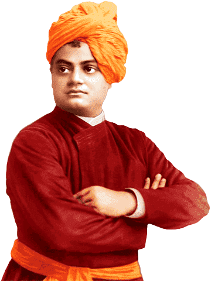

1863 - 1902
" All the powers in the universe are already ours. It is we who have put our hands before our eyes and cry that it is dark. "
Swami Vivekananda (12 January 1863 - 4 July 1902), born Narendranath Datta was an Indian Hindu monk, philosopher, author, religious teacher, and the chief disciple of the Indian mystic Ramakrishna. He was a key figure in the introduction of Vedanta and Yoga to the Western world, and the Father of modern Indian nationalism who is credited with raising interfaith awareness and bringing Hinduism to the status of a major world religion.